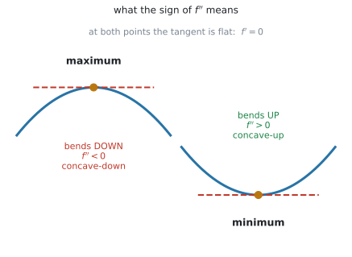
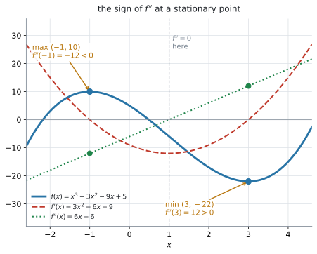
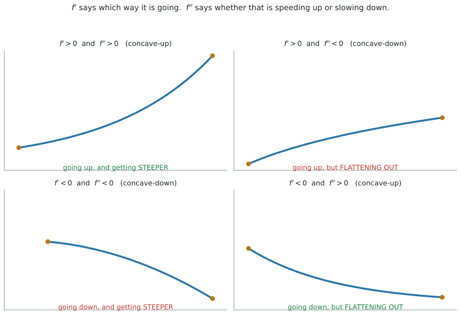

AHL 5.10 — The second derivative（2階導関数）
- \(f''(x)\)、\(\dfrac{d^{2}y}{dx^{2}}\)、\(\ddot{x}\) という書き方を読み、使い分けられる。
- \(2\) 回続けて微分して、second derivative を求められる。
- second derivative test を使って、stationary point が maximum か minimum かを決められる。
- \(f''(a) = 0\) のときは この test では決まらないことを知り、\(f'\) の符号に切り替えられる。
- concave-up（\(f'' > 0\)）と concave-down（\(f'' < 0\)）を使い分けられる。
- \(f'\) と \(f''\) の符号を合わせて読み、「増えているが、増え方は鈍っている」のような説明を英語で書ける。
The idea
1. \(2\) 回微分するだけです
second derivative（\(2\) 階導関数）は、導関数をもう \(1\) 回微分したものです。
\[ f(x) \ \xrightarrow{\ \text{微分}\ } \ f'(x) \ \xrightarrow{\ \text{微分}\ } \ f''(x) \]
たとえば \(f(x) = x^{3} - 3x^{2} - 9x + 5\) なら
\[ f'(x) = 3x^{2} - 6x - 9 \]
\[ f''(x) = 6x - 6 \]
です。\(1\) 回目も \(2\) 回目も、使うのは同じべき乗の公式です（SL 5.3）。
\(f''\) を「\(f\) から一気に」出そうとしないでください。必ず \(f'\) を紙に書いてから、その式を微分します。
途中の \(f'\) は、あとで stationary point を求めるときにも使います。書いておけば \(2\) 度使えます。
Second derivative の書き方は \(3\) 通りあります
シラバスは、Guidance 欄でこう書いています。
Both forms of notation, \(\dfrac{d^{2}y}{dx^{2}}\) and \(f''(x)\) for the second derivative.
| 書き方 | 読み方 | よく使う場面 |
|---|---|---|
| \(f''(x)\) | エフ・ダブルプライム・エックス | \(f(x) = \ldots\) と書かれているとき |
| \(\dfrac{d^{2}y}{dx^{2}}\) | ディー \(2\) ワイ・ディーエックス \(2\) 乗 | \(y = \ldots\) と書かれているとき |
| \(\ddot{x}\) | エックス・ツードット | 時間 \(t\) で \(2\) 回微分するとき |
どれも同じものです。問題文が使っている書き方に合わせて答えてください。
上は \(d^{2}y\)、下は \(dx^{2}\) です。上は \(d\) の右肩、下は \(x\) の右肩につきます。
\(\left(\dfrac{dy}{dx}\right)^{2}\) とはまったく別のものです。\(\left(\dfrac{dy}{dx}\right)^{2}\) は「傾きを \(2\) 乗した数」で、\(\dfrac{d^{2}y}{dx^{2}}\) は「もう \(1\) 回微分したもの」です。
\(\ddot{x}\) の書き方は AHL 5.13 でも使います。点の数が、微分した回数です。
2. \(f''\) は「\(f'\) がどう変わっているか」を表します
この節が、この項目の中心です。 ここが分かれば、あとは全部そこから出てきます。
\(f''\) は \(f'\) を微分したものでした。ですから \(f''\) が表しているのは、\(f'\)（接線の傾き）がどのように変化しているかです。
\[ f''(x) > 0 \quad \Longrightarrow \quad f'(x) \ \text{は、どんどん増えている} \]
\[ f''(x) < 0 \quad \Longrightarrow \quad f'(x) \ \text{は、どんどん減っている} \]
\(f''\) が見ているのは \(f\) ではなく、\(f'\) です。 ここを取り違えないでください。
stationary point で何が起きるか
stationary point（停留点）は、\(f'(a) = 0\) となる点でした（SL 5.6）。そこで \(f''\) の符号を見ると、山か谷かが決まります。
\(f''(a) > 0\) のとき。 \(f'\) は増えていきます。その \(f'\) が \(a\) で \(0\) を通るのですから、\(f'\) は負から正へ変わります。
\[ f' : \quad - \ \longrightarrow \ 0 \ \longrightarrow \ + \]
傾きが「下り → 平ら → 上り」と変わるのですから、\(f\) のグラフはそこで谷です。つまり minimum です。
\(f''(a) < 0\) のとき。 \(f'\) は減っていきます。その \(f'\) が \(a\) で \(0\) を通るのですから、\(f'\) は正から負へ変わります。
\[ f' : \quad + \ \longrightarrow \ 0 \ \longrightarrow \ - \]
「上り → 平ら → 下り」ですから、\(f\) のグラフはそこで山、つまり maximum です。

図 1 が、いま説明した \(2\) つです。どちらの点でも接線は水平（\(f' = 0\)）で、違うのは曲がり方だけです。
| stationary point | 曲線の形 | \(f''\) の符号 |
|---|---|---|
| maximum（山） | 上に出っぱる。\(\cap\) の形 | 負 |
| minimum（谷） | 下にへこむ。\(\cup\) の形 | 正 |
\(\cup\) は上を向いた入れ物の形です。上向き＝正、と結びつけてください。\(f'' > 0\) のとき、その形になります。
山（\(\cap\)）はその逆さまなので、負です。
3. concave-up と concave-down
第2節では、stationary point での \(f''\) の符号を見ました。じつは \(f''\) の符号は、stationary point でなくても意味があります。\(f'\) が増えているか減っているかは、どこででも言えるからです。
シラバスは、この \(2\) 語を名指ししています。
Use of the terms “concave-up” for \(f''(x) > 0\), and “concave-down” for \(f''(x) < 0\).
\[ f''(x) > 0 \ \Rightarrow \ \textbf{concave-up}（下に凸） \qquad\qquad f''(x) < 0 \ \Rightarrow \ \textbf{concave-down}（上に凸） \tag{1}\]
日本の教科書の「下に凸」「上に凸」と同じものです。ただし試験は英語なので、concave-up / concave-down のほうを覚えてください。
- concave-up … \(\cup\) の形。日本語では「下に凸」
- concave-down … \(\cap\) の形。日本語では「上に凸」
英語は「どちらへ曲がっているか」、日本語は「どちらへ出っぱっているか」で言っています。訳語で覚えようとせず、\(\cup\) と \(\cap\) の形で覚えてください。
さきほどの \(f(x) = x^{3} - 3x^{2} - 9x + 5\) なら、\(f''(x) = 6x - 6\) です。
\[ 6x - 6 > 0 \quad \Longleftrightarrow \quad x > 1 \]
ですから \(x > 1\) で concave-up、\(x < 1\) で concave-down です。
4. second derivative test — 山か谷かを \(1\) 回の代入で決めます
第2節で見たことを、そのまま道具にしたものが second derivative test です。
SL 5.6 では、\(f'(x) = 0\) を解いて stationary point を出したあと、その前後で \(f'\) の符号がどう変わるかを調べて maximum か minimum かを決めていました。停留点 \(1\) つにつき、左右の値を入れて調べる必要がありました。
second derivative test なら、\(1\) 回の代入で済みます。
\[ f'(a) = 0 \ \text{のとき} \qquad \begin{cases} f''(a) < 0 & \Rightarrow \ \textbf{maximum} \\[4pt] f''(a) > 0 & \Rightarrow \ \textbf{minimum} \end{cases} \tag{2}\]
\(f'(a) = 0\) が前提です。 stationary point を先に見つけてから使う道具で、どこでも使えるわけではありません。

図 2 は、\(f(x) = x^{3} - 3x^{2} - 9x + 5\) を、\(f'\) と \(f''\) といっしょに描いたものです。
\[ f'(x) = 3(x-3)(x+1) = 0 \quad \Longrightarrow \quad x = -1, \qquad x = 3 \]
\[ f''(-1) = -12 < 0 \quad \Longrightarrow \quad \textbf{maximum} \]
\[ f''(3) = 12 > 0 \quad \Longrightarrow \quad \textbf{minimum} \]
座標は \((-1,\ 10)\) と \((3,\ -22)\) です。答えは点なので、\(y\) 座標も要ります（SL 5.6 第3節）。
第3節で見た concavity も、この図で確かめられます。曲線は \(x = 1\) を境に形を変えていて、そこが \(f'' = 0\) の場所です。
ここで言う maximum・minimum は、local maximum・local minimum（極大・極小）です。\(f''\) が教えてくれるのはその点のまわりの形だけで、定義域全体でいちばん大きい値かどうかは分かりません（SL 5.6 第4節）。
\(f''(a) = 0\) が出たときは、この test では決まりません。 その場合は \(f'\) の符号に戻ってください（SL 5.6 第2節、理由は Why it works）。
5. \(f'\) と \(f''\) の \(4\) つの組み合わせ
\(f'\) と \(f''\) は、別のことを言っています。
- \(f'\) … どちらへ向かっているか（増えているか、減っているか）
- \(f''\) … その勢いが増しているか、弱まっているか

図 3 が、その \(4\) 通りです。
| \(f'\) | \(f''\) | 形 | 読み方 | 英語ではこう書く |
|---|---|---|---|---|
| \(+\) | \(+\) | concave-up | 増えていて、増え方も速くなっている | increasing at an increasing rate |
| \(+\) | \(-\) | concave-down | 増えているが、増え方は鈍ってきている | increasing at a decreasing rate |
| \(-\) | \(-\) | concave-down | 減っていて、減り方が速くなっている | decreasing at an increasing rate |
| \(-\) | \(+\) | concave-up | 減っているが、減り方は鈍ってきている | decreasing at a decreasing rate |
試験で点になるのは、この表の右の \(2\) 列です。数値を出したあと、\(2\) 行目や \(4\) 行目の言い方で英語を \(1\) 文書けるかどうかで差がつきます。
\(f' > 0\) でも \(f'' < 0\) なら、増えてはいるが、頭打ちに向かっているという意味です。
たとえば「新製品の売上は伸びているが、伸びは鈍ってきている」という状況が、ちょうどこれです（表 3 の \(2\) 行目 — increasing at a decreasing rate）。
Comment on や Interpret では、\(2\) つを分けて書いてください。
6. concavity が変わる点
concave-up の区間と concave-down の区間の境目にある点を、point of inflexion（変曲点）といいます。
シラバスの Guidance 欄は、こう書いています。
Awareness that a point of inflexion is a point at which the concavity changes and interpretation of this in context.
awareness（知っていること）と interpretation（意味の説明）と書かれています。求め方の練習が求められているわけではありません。 ですから、このページでも「意味」までにします。
concave-up は \(f'' > 0\)、concave-down は \(f'' < 0\) でした（第3節）。ですから point of inflexion は、\(f''(x)\) の符号が変わるところです。
\[ f''(x) \ \text{の符号が変わる点} \quad \Longleftrightarrow \quad \textbf{point of inflexion} \]
符号が変わることが条件です。\(f''(a) = 0\) でも、その前後で符号が変わらなければ point of inflexion ではありません。
\(f(x) = x^{4}\) がその例です。\(f''(x) = 12x^{2}\) は \(x = 0\) で \(0\) になりますが、前後どちらでも正のままなので、\(x = 0\) は point of inflexion ではなく minimum です（Why it works）。
\(f(x) = x^{3} - 3x^{2} - 9x + 5\) なら、\(x = 1\) で concave-down から concave-up に変わります。この \((1,\ -6)\) が point of inflexion です。
point of inflexion は、最大でも最小でもありません。 増えつづけている途中にあることもあります。
意味は「変化の勢いが折り返した瞬間」です。どちら向きに折り返すかは、concavity がどちらへ変わるかで決まります。
| concavity の変わり方 | その点で起きること |
|---|---|
| concave-up → concave-down | 増え方（勢い）がいちばん強かった瞬間 |
| concave-down → concave-up | 増え方（勢い）がいちばん弱かった瞬間 |
- 感染者数のグラフで concave-up → concave-down なら … 増えてはいるが、増加のペースが下がりはじめた日
- 売上のグラフで concave-up → concave-down なら … 伸びがいちばん急だった時点
Interpret で聞かれたら、「そこで数が減りはじめる」と書かないでください。変わるのは数そのものではなく、変化の勢いです。
さきほどの \((1,\ -6)\) は concave-down → concave-up なので、\(f\) の減り方がいちばん急だった点です。実際 \(f'(1) = -12\) が \(f'\) の最小値です。
Why it works
なぜ \(f'' < 0\) が maximum なのか
第2節で見たとおり、\(f''(a) < 0\) は「\(a\) のところで \(f'\) が減っている」という意味です。\(f'\) は \(a\) で \(0\) を通り、そこで減っているのですから、\(a\) の手前では正、\(a\) の先では負になります。
\[ f' : \quad + \ \longrightarrow \ 0 \ \longrightarrow \ - \]
これは SL 5.6 第2節 の maximum の並びそのものです。\(f''(a) > 0\) なら向きが逆になり、minimum の並びになります。
つまり second derivative test は、SL 5.6 でやっていた「符号の変化を調べる」作業を、\(f''\) という \(1\) つの数に押しこんだものです。新しい原理ではなく、同じことの近道です。
なぜ \(f'' = 0\) では決まらないのか
\(f''(a) = 0\) は、「その点で \(f'\) が増えても減ってもいない」という意味です。
けれども、\(f'\) がその点の前後でどう動くかまでは分かりません。\(f'\) が \(0\) をはさんで符号を変えるのか、変えないのかが、この \(1\) つの数からは読めないのです。
\(2\) つの例で確かめます。どちらも \(x = 0\) で \(f'(0) = 0\)、\(f''(0) = 0\) です。
| 関数 | \(x = 0\) での様子 |
|---|---|
| \(f(x) = x^{4}\) | \(f'(x) = 4x^{3}\)、\(f''(x) = 12x^{2}\)。\(x = 0\) は minimum |
| \(f(x) = x^{3}\) | \(f'(x) = 3x^{2}\)、\(f''(x) = 6x\)。\(x = 0\) は maximum でも minimum でもない |
\(f(x) = x^{4}\) … \(f'(x) = 4x^{3}\) なので
\[ f'(-1) = -4 < 0, \qquad f'(1) = 4 > 0 \]
負から正へ変わっています。minimum です。
\(f(x) = x^{3}\) … \(f'(x) = 3x^{2}\) なので
\[ f'(-1) = 3 > 0, \qquad f'(1) = 3 > 0 \]
符号が変わりません。 ですから山でも谷でもなく、SL 5.6 でいう stationary point of inflexion（変曲点となる停留点）です。
同じ \(f''(0) = 0\) から、\(2\) つの違う結論が出ました。 だから \(f'' = 0\) のときは、\(f'\) の符号に戻るしかありません。
Worked examples
問題文は英語です。意味が理解できなかったら、問題文の下の「日本語訳」を開いてください。解説は日本語です。
例題 1 Let \(f(x) = x^{3} - 3x^{2} - 9x + 5\).
(a) Find \(f'(x)\) and \(f''(x)\).
(b) Find the coordinates of the stationary points of the graph of \(f\).
(c) Use the second derivative test to determine the nature of each stationary point.
日本語訳
\(f(x) = x^{3} - 3x^{2} - 9x + 5\) とします。
the nature of は「その点が maximum なのか minimum なのか」という意味です。
(a) \(f'(x)\) と \(f''(x)\) を求めなさい。
(b) \(f\) のグラフの stationary point の座標を求めなさい。
(c) second derivative test を使って、それぞれの stationary point がどちらなのかを決定しなさい。
(a) べき乗の公式で、\(2\) 回続けて微分します（第1節）。
\[ f'(x) = 3x^{2} - 6x - 9 \]
\[ f''(x) = 6x - 6 \]
(b) stationary point は \(f'(x) = 0\) です（SL 5.6）。
\[ 3x^{2} - 6x - 9 = 3(x-3)(x+1) = 0 \quad \Longrightarrow \quad x = -1, \qquad x = 3 \]
\(y\) 座標は、もとの \(f\) に代入して出します。
\[ f(-1) = -1 - 3 + 9 + 5 = 10 \]
\[ f(3) = 27 - 27 - 27 + 5 = -22 \]
座標は \((-1,\ 10)\) と \((3,\ -22)\) です。
(c) \(f''\) に代入します（式 2）。
\[ f''(-1) = -6 - 6 = -12 < 0 \quad \Longrightarrow \quad \text{maximum} \]
\[ f''(3) = 18 - 6 = 12 > 0 \quad \Longrightarrow \quad \text{minimum} \]
検算。 \(f'\) の符号でも確かめます。\(f'(0) = -9 < 0\)、\(f'(-2) = 12 + 12 - 9 = 15 > 0\) なので、\(x = -1\) の前後で \(+ \to -\)。maximum です ✓（SL 5.6 第2節）
(a) \[ f'(x) = 3x^{2} - 6x - 9, \qquad f''(x) = 6x - 6 \]
(b) \[ 3(x-3)(x+1) = 0 \quad \Longrightarrow \quad x = -1, \ 3 \] \[ f(-1) = 10, \qquad f(3) = -22 \] \[ (-1,\ 10) \quad \text{and} \quad (3,\ -22) \]
(c) \[ f''(-1) = -12 < 0 \quad \Longrightarrow \quad (-1,\ 10) \ \text{is a maximum} \] \[ f''(3) = 12 > 0 \quad \Longrightarrow \quad (3,\ -22) \ \text{is a minimum} \]
例題 2 A cup of coffee is left to cool. Its temperature, in \(^{\circ}\)C, after \(t\) minutes is modelled by
\[ T(t) = 20 + 60e^{-0.2t}, \qquad t \geq 0 \]
(a) Find \(T'(t)\) and \(T''(t)\).
(b) Find the value of \(T'(5)\) and the value of \(T''(5)\).
(c) State whether the graph of \(T\) is concave-up or concave-down, giving a reason.
(d) Interpret your answers to part (b) in the context of the model.
日本語訳
コーヒーが冷めていきます。\(t\) 分後の温度（\(^{\circ}\)C）が、上の式でモデル化されています。
to cool は「冷める」、giving a reason は「理由を示して」という意味です。
(a) \(T'(t)\) と \(T''(t)\) を求めなさい。
(b) \(T'(5)\) と \(T''(5)\) の値を求めなさい。
(c) \(T\) のグラフが concave-up か concave-down かを、理由を示して述べなさい。
(d) (b) の答えの意味を、このモデルの文脈で説明しなさい。
(a) \(e^{-0.2t}\) には中身があるので chain rule です（AHL 5.9b）。中身 \(-0.2t\) の微分は \(-0.2\) です。
\[ T'(t) = 60 \times (-0.2)e^{-0.2t} = -12e^{-0.2t} \]
もう \(1\) 回、同じように微分します。
\[ T''(t) = -12 \times (-0.2)e^{-0.2t} = 2.4e^{-0.2t} \]
定数 \(20\) の微分は \(0\) です。 \(1\) 回目で消えているので、\(2\) 回目には出てきません。
(b) \(t = 5\) を入れます。\(e^{-1} = 0.3679\) です。
\[ T'(5) = -12e^{-1} = -4.4146 \approx -4.41 \]
\[ T''(5) = 2.4e^{-1} = 0.8829 \approx 0.883 \]
(c) \(e^{-0.2t}\) はいつも正なので、\(T''(t) = 2.4e^{-0.2t}\) もいつも正です。
試験ではこう書く
The graph is concave-up, since \(T''(t) = 2.4e^{-0.2t} > 0\) for all \(t \geq 0\).
（\(e^{-0.2t}\) はつねに正なので \(T''\) もつねに正、よって concave-up である、という意味です。）
(d) \(T' < 0\) と \(T'' > 0\) の組み合わせです。表 3 の \(4\) 行目にあたります。
試験ではこう書く
After \(5\) minutes the coffee is cooling at a rate of \(4.41\ ^{\circ}\)C per minute. Since \(T''(5) = 0.883 > 0\), the rate of cooling is decreasing, so the coffee is still getting colder but more and more slowly.
（\(5\) 分後、コーヒーは毎分 \(4.41\ ^{\circ}\)C の割合で冷めている。\(T''(5) > 0\) なので冷める速さは小さくなっており、まだ冷めてはいるが、そのペースは落ちている、という意味です。）
検算。 \(T(5) = 20 + 60e^{-1} = 42.07\)、\(T(6) = 20 + 60e^{-1.2} = 38.07\) で、\(1\) 分で \(4.0\) 度下がっています。\(T'(5) = -4.41\) と近い値です ✓ さらに \(T(10) = 28.12\)、\(T(11) = 26.65\) で、こちらは \(1\) 分で \(1.5\) 度。冷め方が遅くなっています ✓
(a) \[ T'(t) = -12e^{-0.2t}, \qquad T''(t) = 2.4e^{-0.2t} \]
(b) \[ T'(5) = -12e^{-1} = -4.41, \qquad T''(5) = 2.4e^{-1} = 0.883 \]
(c) Concave-up, since \(T''(t) = 2.4e^{-0.2t} > 0\) for all \(t \geq 0\).
(d) After \(5\) minutes the temperature is falling at \(4.41\ ^{\circ}\)C per minute. As \(T''(5) > 0\), this rate of fall is decreasing, so the coffee is cooling more and more slowly.
例題 3 Let \(f(x) = x^{4} - 4x^{3}\).
(a) Show that the stationary points of the graph of \(f\) occur at \(x = 0\) and \(x = 3\).
(b) Use the second derivative test to determine the nature of the stationary point at \(x = 3\).
(c) Explain why the second derivative test cannot be used at \(x = 0\), and determine the nature of that stationary point by another method.
日本語訳
\(f(x) = x^{4} - 4x^{3}\) とします。
occur at は「〜のところで起こる」、(a) \(f\) のグラフの stationary point が \(x = 0\) と \(x = 3\) で起こることを示しなさい。
(b) second derivative test を使って、\(x = 3\) の stationary point がどちらなのかを決定しなさい。
(c) \(x = 0\) では second derivative test が使えない理由を説明し、その stationary point がどちらなのかを別の方法で決定しなさい。
(a) Show that なので、途中をすべて書きます。
\[ f'(x) = 4x^{3} - 12x^{2} = 4x^{2}(x - 3) \]
\[ 4x^{2}(x-3) = 0 \quad \Longrightarrow \quad x = 0, \qquad x = 3 \]
(b)
\[ f''(x) = 12x^{2} - 24x \]
\[ f''(3) = 108 - 72 = 36 > 0 \quad \Longrightarrow \quad \text{minimum} \]
\(y\) 座標は \(f(3) = 81 - 108 = -27\) なので、\((3,\ -27)\) が minimum です。
(c) \(x = 0\) を \(f''\) に入れます。
\[ f''(0) = 0 - 0 = 0 \]
\(0\) が出たので、この test では決まりません（Why it works）。\(f'\) の符号に戻ります（SL 5.6 第2節）。
\[ f'(-1) = 4(1)(-4) = -16 < 0 \]
\[ f'(1) = 4(1)(-2) = -8 < 0 \]
両側とも負で、符号が変わりません。 ですから maximum でも minimum でもありません。
試験ではこう書く
Since \(f''(0) = 0\), the second derivative test gives no information at \(x = 0\). Using the sign of \(f'\) instead: \(f'(-1) = -16 < 0\) and \(f'(1) = -8 < 0\), so \(f'\) does not change sign at \(x = 0\). The point \((0,\ 0)\) is therefore neither a maximum nor a minimum; it is a stationary point of inflexion.
（\(f''(0) = 0\) なので test では何も分からない。\(f'\) の符号は \(x = 0\) の前後で変わらないので、\((0, 0)\) は maximum でも minimum でもなく、stationary point of inflexion である、という意味です。）
検算。 \(f'(x) = 4x^{2}(x-3)\) の \(4x^{2}\) は、\(x \neq 0\) ではつねに正です。ですから \(f'\) の符号は \((x-3)\) だけで決まり、\(x < 3\) ではずっと負 ✓ \(x = 0\) の前後で変わらないことが、式からも読めます。
(a) \[ f'(x) = 4x^{3} - 12x^{2} = 4x^{2}(x-3) = 0 \] \[ x = 0 \quad \text{or} \quad x = 3 \]
(b) \[ f''(x) = 12x^{2} - 24x, \qquad f''(3) = 36 > 0 \] \[ (3,\ -27) \ \text{is a minimum} \]
(c) \[ f''(0) = 0, \ \text{so the test gives no information.} \] \[ f'(-1) = -16 < 0, \qquad f'(1) = -8 < 0 \] \(f'\) does not change sign, so \((0,\ 0)\) is neither a maximum nor a minimum; it is a stationary point of inflexion.
例題 4 A particle moves in a straight line. Its displacement, in metres, at time \(t\) seconds is
\[ s = t^{3} - 6t^{2} + 9t, \qquad t \geq 0 \]
(a) Find \(\dot{s}\) and \(\ddot{s}\).
(b) Find the times at which the particle is at rest.
(c) Use \(\ddot{s}\) to determine whether the displacement is a maximum or a minimum at each of these times.
日本語訳
ある粒子が直線上を動きます。時刻 \(t\) 秒における変位（メートル）は上の式です。
at rest は「静止している」という意味です。
(a) \(\dot{s}\) と \(\ddot{s}\) を求めなさい。
(b) 粒子が静止する時刻を求めなさい。
(c) \(\ddot{s}\) を使って、それぞれの時刻で変位が maximum か minimum かを決定しなさい。
(a) 点の数が微分の回数です（表 1）。
\[ \dot{s} = 3t^{2} - 12t + 9 \]
\[ \ddot{s} = 6t - 12 \]
\(\dot{s}\) が velocity（速度）、\(\ddot{s}\) が acceleration（加速度） です（AHL 5.13）。
(b) at rest は \(v = 0\)、つまり \(\dot{s} = 0\) です。
\[ 3t^{2} - 12t + 9 = 3(t-1)(t-3) = 0 \quad \Longrightarrow \quad t = 1, \qquad t = 3 \]
どちらも \(t \geq 0\) をみたしています。
(c) \(\ddot{s}\) に代入します（式 2）。
\[ \ddot{s}(1) = 6 - 12 = -6 < 0 \quad \Longrightarrow \quad s \ \text{は maximum} \]
\[ \ddot{s}(3) = 18 - 12 = 6 > 0 \quad \Longrightarrow \quad s \ \text{は minimum} \]
\[ s(1) = 1 - 6 + 9 = 4, \qquad s(3) = 27 - 54 + 27 = 0 \]
\(t = 1\) までは前へ進み、そこで折り返します（\(s = 4\) m）。\(t = 3\) で出発点に戻ります。
検算。 \(1 < t < 3\) では \(\dot{s} = 3(t-1)(t-3) < 0\)、つまり後ろ向きに動いています ✓ \(t > 3\) では \(\dot{s} > 0\) なので、また前へ進みます。\(s(4) = 4\)、\(s(5) = 20\) です。\(s = 4\) は local maximum であって、いちばん遠い地点ではありません（SL 5.6 第4節）。
(a) \[ \dot{s} = 3t^{2} - 12t + 9, \qquad \ddot{s} = 6t - 12 \]
(b) \[ \dot{s} = 0 \quad \Longrightarrow \quad 3(t-1)(t-3) = 0 \] \[ t = 1 \ \text{s}, \qquad t = 3 \ \text{s} \]
(c) \[ \ddot{s}(1) = -6 < 0 \quad \Longrightarrow \quad s \ \text{is a maximum},\ s = 4 \ \text{m} \] \[ \ddot{s}(3) = 6 > 0 \quad \Longrightarrow \quad s \ \text{is a minimum},\ s = 0 \ \text{m} \]
Common errors
誤り：\(f''(a) = 0\) が出た時点で、「したがって \(a\) は point of inflexion」と結論する。
\(f(x) = x^{4}\) は \(x = 0\) で \(f'' = 0\) ですが、そこは minimum です（表 5）。
正しくは：\(f'' = 0\) で分かるのは「この test が使えない」ことだけです。\(f'\) の符号に戻ってください（Why it works）。
誤り：\(f\) を微分して \(f'\) を出したあと、また \(f\) を微分して \(f''\) と書く。
正しくは：\(f''\) は \(f'\) を微分したものです（第1節）。\(f'\) を紙に書いてから、その式を微分してください。
誤り：\(\dfrac{dy}{dx} = 3x^{2}\) から \(\dfrac{d^{2}y}{dx^{2}} = 9x^{4}\) と書く（\(2\) 乗してしまっている）。
正しくは：\(\dfrac{d^{2}y}{dx^{2}} = 6x\) です。\(2\) 乗ではなく、もう \(1\) 回微分します（第1節）。
誤り：「concave-up だから上に凸」と考える。
正しくは：concave-up は \(\cup\) の形で、日本語では「下に凸」です（第3節）。
\(\cup\) と \(\cap\) の形で覚えてください。 訳語をたどると逆になります。
誤り：\(x = -1\) で maximum、と書いて終わる。
正しくは：\((-1,\ 10)\) と座標で書きます（SL 5.6 第3節）。\(y\) はもとの \(f\) に代入して出します。\(f'\) や \(f''\) に代入しないでください。
Using your GDC (TI-Nspire CX II)
\(f''\) の式は自分で書きます。電卓は、その式が合っているかを確かめるために使います。
1. ある点での \(f''\) の値を出す
AHL 5.9a で使ったものと同じ機能です。
menu → Calculus → Derivative at a Pointダイアログに Derivative の欄があり、1st Derivative と 2nd Derivative を選べます。2nd Derivative を選ぶと、\(2\) 階微分のテンプレートが出ます。画面に出てくる形のまま入れてください。
\[ \left. \frac{d^{2}}{dx^{2}}\left(x^{3} - 3x^{2} - 9x + 5\right) \right|_{x=3} \]
返るのは \(12\)。自分で作った \(f''(x) = 6x - 6\) に \(x = 3\) を入れても \(12\) ✓
OS の版によって、この欄の見え方が違うことがあります。 見つからなければ、1st Derivative を、自分で作った \(f'(x)\) に対して使ってください。\(f'\) をもう \(1\) 回微分したものが \(f''\) ですから、これでも \(f''(a)\) の値が出ます。
自分の \(f''(x)\) に代入するだけでは検算になりません。 \(f''\) の式そのものを間違えていたら、同じ間違いがそのまま出るからです。
2. \(f\)、\(f'\)、\(f''\) を重ねて描く
\(3\) つを同じ画面に描くと、関係が目で見えます。
- \(f1(x) = x^{3} - 3x^{2} - 9x + 5\)
- \(f2(x) = 3x^{2} - 6x - 9\)
- \(f3(x) = 6x - 6\)
見るところは \(2\) つです。
- \(f_1\) が水平なところで、\(f_2\) が \(x\) 軸を横切る（SL 5.6）
- そこでの \(f_3\) の符号が、山か谷かを決めている
図 2 が、この \(3\) 本を重ねた絵です。
3. maximum / minimum を直接出して確かめる
答えが合っているかは、グラフ機能でも確かめられます。
menu → Analyze Graph → Maximum （または Minimum）\((-1,\ 10)\) と \((3,\ -22)\) が出れば合っています（SL 5.6）。
Use the second derivative test と指定されている問題では、グラフで出した答えだけでは点になりません。 \(f''(a)\) の値と、その符号から出した結論を書いてください。
電卓は検算に使います。
4. 確かめ方
\(4\) つあります。
- \(f'' > 0\) を minimum と書いたか（式 2）
- 答えを座標で書いたか。\(y\) はもとの \(f\) に代入したか
- \(f''(a) = 0\) が出たら、\(f'\) の符号に切り替えたか（Why it works）
- numerical derivative の \(2\) 階微分の値と、自分の \(f''(x)\) に代入した値が合うか
Exercises
各問題に、折りたたみが3つ付いています。日本語訳、解答例（答案用紙に書くべきこと。英語です）、解説（なぜそうなるか。日本語です）。
まず自分で解いて、次に解答例と見くらべてください。解説は、合わなかったときだけ開けば十分です。
1 Let \(y = x^{3} - 6x^{2} + 5\). Find \(\dfrac{dy}{dx}\) and \(\dfrac{d^{2}y}{dx^{2}}\).
日本語訳
\(y = x^{3} - 6x^{2} + 5\) とします。\(\dfrac{dy}{dx}\) と \(\dfrac{d^{2}y}{dx^{2}}\) を求めなさい。
\[ \frac{dy}{dx} = 3x^{2} - 12x \] \[ \frac{d^{2}y}{dx^{2}} = 6x - 12 \]
\(2\) 回続けて微分するだけです（第1節）。
定数 \(5\) の微分は \(0\) なので、\(1\) 回目で消えます。\(2\) 回目には出てきません。
\(\dfrac{dy}{dx}\) を書いてから、それを微分してください。 もとの \(y\) をもう一度微分するのではありません。
2 Let \(f(x) = 2x^{3} + 3x^{2} - 12x\).
(a) Find the coordinates of the stationary points of the graph of \(f\).
(b) Use the second derivative test to determine the nature of each stationary point.
日本語訳
\(f(x) = 2x^{3} + 3x^{2} - 12x\) とします。
(a) \(f\) のグラフの stationary point の座標を求めなさい。
(b) second derivative test を使って、それぞれの stationary point がどちらなのかを決定しなさい。
(a) \[ f'(x) = 6x^{2} + 6x - 12 = 6(x+2)(x-1) = 0 \] \[ x = -2 \quad \text{or} \quad x = 1 \] \[ f(-2) = 20, \qquad f(1) = -7 \] \[ (-2,\ 20) \quad \text{and} \quad (1,\ -7) \]
(b) \[ f''(x) = 12x + 6 \] \[ f''(-2) = -18 < 0 \quad \Longrightarrow \quad (-2,\ 20) \ \text{is a maximum} \] \[ f''(1) = 18 > 0 \quad \Longrightarrow \quad (1,\ -7) \ \text{is a minimum} \]
例 1 と同じ形です。
(a) \(6x^{2} + 6x - 12 = 6(x^{2} + x - 2) = 6(x+2)(x-1)\) と、まず \(6\) でくくると因数分解しやすくなります。
\(y\) 座標はもとの \(f\) に代入します。
\[ f(-2) = -16 + 12 + 24 = 20, \qquad f(1) = 2 + 3 - 12 = -7 \]
(b) \(f'' = 12x + 6\) に代入するだけです。負が maximum、正が minimum です（式 2）。
検算。 \(f'(0) = -12 < 0\) で、\(-2 < x < 1\) では減っています。\(x = -2\) が山、\(x = 1\) が谷という結論と合っています ✓
3 Let \(f(x) = e^{x} - 3x\). Find the coordinates of the stationary point of the graph of \(f\), and use the second derivative test to determine its nature. Give each coordinate to three significant figures.
日本語訳
\(f(x) = e^{x} - 3x\) とします。\(f\) のグラフの stationary point の座標を求め、second derivative test を使ってどちらなのかを決定しなさい。座標はそれぞれ有効数字 \(3\) 桁で答えなさい。
\[ f'(x) = e^{x} - 3 = 0 \quad \Longrightarrow \quad x = \ln 3 = 1.10 \] \[ f(\ln 3) = 3 - 3\ln 3 = -0.296 \] \[ f''(x) = e^{x}, \qquad f''(\ln 3) = 3 > 0 \] \[ (1.10,\ -0.296) \ \text{is a minimum} \]
\(e^{x}\) の微分は \(e^{x}\) です（AHL 5.9a）。\(2\) 回微分しても \(e^{x}\) のままなので、\(f''(x) = e^{x}\) です。
\(e^{x} = 3\) を解くと \(x = \ln 3 = 1.0986\)。\(e^{\ln 3} = 3\) なので
\[ f(\ln 3) = 3 - 3(1.0986) = -0.2958 \]
丸める前の \(\ln 3\) を使って \(y\) を計算してください（AHL 5.9b）。
\(f''(\ln 3) = e^{\ln 3} = 3 > 0\) なので minimum です。
検算。 \(e^{x} > 0\) なので \(f'' > 0\) がつねに成り立ちます。この曲線はどこでも concave-up で、山はひとつもありません ✓
4 State, with a reason, whether the graph of \(y = x^{2} - 4x\) is concave-up or concave-down.
日本語訳
\(y = x^{2} - 4x\) のグラフが concave-up か concave-down かを、理由を示して述べなさい。
\[ \frac{dy}{dx} = 2x - 4, \qquad \frac{d^{2}y}{dx^{2}} = 2 \] The second derivative is \(2 > 0\) for all \(x\), so the graph is concave-up everywhere.
State, with a reason なので、答えと理由の両方が要ります。理由は \(f''\) の符号です（式 1）。
\(\dfrac{d^{2}y}{dx^{2}} = 2\) は \(x\) を含まない定数なので、どこでも正です。
試験ではこう書く
Since \(\dfrac{d^{2}y}{dx^{2}} = 2 > 0\) for all values of \(x\), the graph is concave-up for all \(x\).
放物線が \(\cup\) の形をしていることと合っています ✓ \(x^{2}\) の係数が正だからです。
5 Let \(f(x) = x^{3}\). Find \(f''(x)\), and state the values of \(x\) for which the graph of \(f\) is concave-up.
日本語訳
\(f(x) = x^{3}\) とします。\(f''(x)\) を求め、\(f\) のグラフが concave-up になる \(x\) の値を述べなさい。
\[ f'(x) = 3x^{2}, \qquad f''(x) = 6x \] \[ 6x > 0 \quad \Longleftrightarrow \quad x > 0 \] The graph is concave-up for \(x > 0\).
concave-up は \(f'' > 0\) の区間です（式 1）。\(f'' = 6x\) なので、\(x\) の符号がそのまま \(f''\) の符号になります。
- \(x > 0\) … concave-up（\(\cup\) の形）
- \(x < 0\) … concave-down（\(\cap\) の形）
\(x = 0\) で形が変わるので、そこが point of inflexion です（第6節）。
この曲線は \(x = 0\) で \(f' = 0\) にもなっています。 ただし Why it works で見たとおり、そこは maximum でも minimum でもありません。
6 Let \(y = \ln x\), for \(x > 0\). Find \(\dfrac{d^{2}y}{dx^{2}}\), and state whether the graph is concave-up or concave-down.
日本語訳
\(x > 0\) について \(y = \ln x\) とします。\(\dfrac{d^{2}y}{dx^{2}}\) を求め、グラフが concave-up か concave-down かを述べなさい。
\[ \frac{dy}{dx} = \frac{1}{x} = x^{-1} \] \[ \frac{d^{2}y}{dx^{2}} = -x^{-2} = -\frac{1}{x^{2}} \] Since \(x^{2} > 0\) for \(x > 0\), we have \(\dfrac{d^{2}y}{dx^{2}} < 0\), so the graph is concave-down.
\(\ln x\) の微分は \(\dfrac{1}{x}\) です（AHL 5.9a）。\(2\) 回目は、べき乗の形に書き直してから微分します（AHL 5.9a）。
\[ \frac{1}{x} = x^{-1} \quad \Longrightarrow \quad (-1)x^{-2} = -\frac{1}{x^{2}} \]
マイナスが付きます。 \(-\dfrac{1}{x^{2}}\) は \(x > 0\) でつねに負なので concave-down です。
検算。 \(y = \ln x\) は増えつづけますが、右へ行くほど平らになります。これは 表 3 の \(2\) 行目（\(f' > 0\)、\(f'' < 0\)）です ✓
7 The number of people \(P\) infected with a virus, \(t\) days after the start of an outbreak, satisfies \(\dfrac{dP}{dt} > 0\) and \(\dfrac{d^{2}P}{dt^{2}} < 0\) on a certain day. Comment on what this tells you about the outbreak on that day.
日本語訳
ある感染症の流行が始まってから \(t\) 日後に感染している人数 \(P\) について、ある日には \(\dfrac{dP}{dt} > 0\) かつ \(\dfrac{d^{2}P}{dt^{2}} < 0\) が成り立っています。この日の流行について、これが何を表しているかコメントしなさい。
Since \(\dfrac{dP}{dt} > 0\), the number of infected people is still increasing on that day. Since \(\dfrac{d^{2}P}{dt^{2}} < 0\), the rate of increase is falling, so new infections are being added more and more slowly. The outbreak is still growing, but the growth is slowing down.
表 3 の \(2\) 行目（\(f' > 0\)、\(f'' < 0\)）です。
要点は \(2\) つで、両方書かないと点になりません。
- \(\dfrac{dP}{dt} > 0\) … 人数はまだ増えている
- \(\dfrac{d^{2}P}{dt^{2}} < 0\) … その増え方が鈍っている
「人数が減っている」と書くのは誤りです。 減っているのは増加のペースであって、人数そのものではありません（第6節）。
試験ではこう書く
The number of infected people is still rising, since \(\dfrac{dP}{dt} > 0\). However \(\dfrac{d^{2}P}{dt^{2}} < 0\), so the rate at which new people are infected is decreasing: the outbreak is still growing but is slowing down.
8 Let \(f(x) = x^{4}\).
(a) Show that \(f'(0) = 0\) and \(f''(0) = 0\).
(b) Explain why the second derivative test cannot be used here, and determine the nature of the stationary point at \(x = 0\).
日本語訳
\(f(x) = x^{4}\) とします。
(a) \(f'(0) = 0\) かつ \(f''(0) = 0\) であることを示しなさい。
(b) ここで second derivative test が使えない理由を説明し、\(x = 0\) の stationary point がどちらなのかを決定しなさい。
(a) \[ f'(x) = 4x^{3}, \qquad f'(0) = 0 \] \[ f''(x) = 12x^{2}, \qquad f''(0) = 0 \]
(b) Since \(f''(0) = 0\), the second derivative test gives no information. Using the sign of \(f'\) instead: \[ f'(-1) = -4 < 0, \qquad f'(1) = 4 > 0 \] \(f'\) changes from negative to positive, so \((0,\ 0)\) is a minimum.
(b) が、このページで押さえたいところです（Why it works）。
\(f''(0) = 0\) を見て「point of inflexion」と書かないでください。この関数の \(x = 0\) は、はっきりと minimum です。
やることは SL 5.6 の方法に戻るだけです。\(f'\) に \(x = -1\) と \(x = 1\) を入れて、符号の変化を見ます。
\[ - \ \longrightarrow \ 0 \ \longrightarrow \ + \qquad \Longrightarrow \qquad \text{minimum} \]
試験ではこう書く
Since \(f''(0) = 0\), the second derivative test gives no information at \(x = 0\). Using the sign of \(f'\): \(f'(-1) = -4 < 0\) and \(f'(1) = 4 > 0\), so \(f'\) changes from negative to positive and \((0,\ 0)\) is a minimum.
検算。 \(x^{4}\) は \(x \neq 0\) でつねに正、\(x = 0\) で \(0\) です。ですから \((0, 0)\) が最小である、と直接言うこともできます ✓
9 The displacement of a particle, in metres, is \(s = t^{3} - 3t^{2}\) for \(t \geq 0\). Find \(\dot{s}\) and \(\ddot{s}\), and find the time at which the acceleration is zero.
日本語訳
ある粒子の変位は、\(t \geq 0\) について \(s = t^{3} - 3t^{2}\) メートルです。\(\dot{s}\) と \(\ddot{s}\) を求め、加速度が \(0\) になる時刻を求めなさい。
\[ \dot{s} = 3t^{2} - 6t \ \text{m s}^{-1} \] \[ \ddot{s} = 6t - 6 \ \text{m s}^{-2} \] \[ 6t - 6 = 0 \quad \Longrightarrow \quad t = 1 \ \text{s} \]
点の数が微分の回数です（表 1）。\(\ddot{s}\) が acceleration です（AHL 5.13）。
聞かれているのは \(\ddot{s} = 0\) であって、\(\dot{s} = 0\) ではありません。 at rest（静止）なら \(\dot{s} = 0\) ですが、この問題は acceleration is zero です（AHL 5.13 第3節）。
\(t = 1\) の前後で \(\ddot{s}\) の符号が変わる、つまり \(s\) のグラフの concavity が変わります。この \(t = 1\) は、速度がいちばん小さくなる時刻です。
検算。 \(\dot{s} = 3t^{2} - 6t = 3(t-1)^{2} - 3\) なので、\(t = 1\) で最小値 \(-3\) をとります ✓
10 A student finds that a function \(f\) has \(f'(2) = 0\) and \(f''(2) = 5\), and writes
\[ f''(2) = 5 > 0, \ \text{so} \ x = 2 \ \text{gives a maximum.} \]
Identify the error and write down the correct conclusion.
日本語訳
ある生徒が、関数 \(f\) について \(f'(2) = 0\)、\(f''(2) = 5\) であることを求め、上のように書きました。誤りを指摘し、正しい結論を書きなさい。
The student has the test the wrong way round. A positive second derivative means the curve is concave-up at that point, so the stationary point is a minimum, not a maximum. \[ f''(2) = 5 > 0 \quad \Longrightarrow \quad x = 2 \ \text{gives a minimum.} \]
\(f'' > 0\) は minimum です（式 2）。この項目でいちばん多い取り違えです。
形で確かめてください。 \(f'' > 0\) は concave-up、つまり \(\cup\) の形です。\(\cup\) の底は谷なので minimum です（表 2）。
試験ではこう書く
The signs are reversed. Since \(f''(2) = 5 > 0\), the graph is concave-up at \(x = 2\), so the stationary point is a minimum. A maximum would require \(f''(2) < 0\).